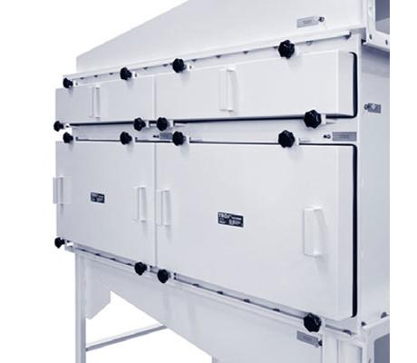

- Применение
- Компоновка нескольких KSFS в единую канальную фильтровальную систему для критических требований.
- Масштаб
- До шести фильтровальных корпусов KSFS в одном ряду.
- Аэродинамика
- Направляющие пластины в выходном патрубке выравнивают поток и помогают снижать суммарный перепад давления.
- Схема потока
- Выбираемое расположение входа и выхода воздуха в зависимости от компоновки объекта.
- Контроль
- Предусмотрена проверка герметичности всей собранной фильтровальной системы.
Точная комплектация определяется проектом: расходом воздуха, требуемым классом фильтра, материалом корпуса, схемой обслуживания и требованиями к испытаниям/валидации.